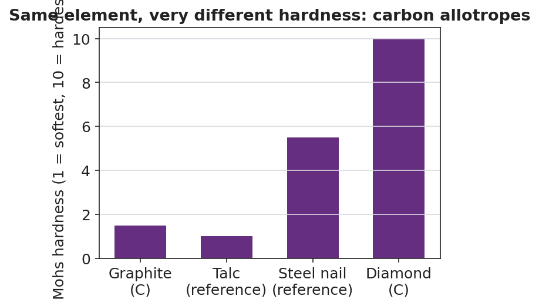

01 Phenomenon
Your teacher holds up two objects: a diamond and a pencil. Both are made of nothing but carbon atoms — the same element, the same box on the periodic table, no other ingredient. The diamond scratches glass and shrugs off a steel file: it is the hardest natural substance known. The pencil “lead” (graphite) leaves a gray streak on paper with the lightest touch and smears under a thumb: it is soft. Same element. Opposite extremes of hardness.
02 Driving question
Why is diamond the hardest natural substance but graphite is soft enough to write with — when both are pure carbon?
03 Notice & wonder
| I notice… | I wonder… |
|---|---|
Turn & Talk #1: The diamond and the pencil are both pure carbon — the atoms are identical. If you cannot change what the atoms are, what is the only thing left that could be different between them? Try to name it in one phrase.
04 Initial model
You will build two structures out of the same “atoms.” After you build them, use them to answer this:
Why is the cage structure (Build A) so hard, and why does the sheet structure (Build B) slide and rub off so easily? Sketch each structure and label how many neighbors each atom has.
| Build A — “cage” | Build B — “sheets” | |
|---|---|---|
| Quick sketch | ||
| Neighbors per atom | ||
| My explanation of its behavior |
05 Investigate
Part 1 — ACTIVE LEARNING: build both structures from the same atoms
Using the model materials your teacher gives you (toothpicks/bonds and gumdrops/atoms), build two structures from the same pile of “carbon” atoms.
Build A — the “cage”: Bond every atom to four neighbors, pointing out in three dimensions, until you have a small rigid block. Push it and twist it.
Build B — the “sheets”: Bond every atom to only three neighbors, all in a flat plane, forming sheets of six-sided rings (hexagons). Make two or three sheets and lay them loosely on top of each other — do not connect the sheets to each other. Slide the top sheet sideways.
Part 2 — Stress-test and record
Test each build and fill in the table. (The last row you will complete in Phase 3, after your teacher names the structures.)
| Property to test | Build A — “cage” | Build B — “sheets” |
|---|---|---|
| Neighbors per atom | ||
| Shape: 2-D sheets or 3-D network? | ||
| Slides when pushed sideways? (yes/no) | ||
| Predicted hardness (high/low) | ||
| Real form of carbon (name it in Phase 3) |
Part 3 — Reading the hardness chart
Look at figures/carbon_allotrope_hardness.png:

Which form of carbon has the highest Mohs hardness? _______________
Which form of carbon has the lowest Mohs hardness? _______________
Both diamond and graphite are pure carbon, yet they sit at opposite ends of the chart. Use your two builds to explain why.
06 Make it make sense
For each item below, use your models and the hardness chart to answer.
1. In Build A (the cage), every carbon atom is bonded to four neighbors in a rigid 3-D network.
- Why can’t this structure slide or be scratched easily? _______________________________________________
- Which real form of carbon is this, and where is it on the hardness chart? _______________________________________________
2. In Build B (the sheets), each carbon is bonded to three neighbors in flat sheets that are only weakly stacked.
- What happens when you push the top sheet sideways? _______________________________________________
- Why does this structure leave a mark when you drag it across paper? _______________________________________________
3. A classmate says, “Diamond must be harder because it has something extra mixed in that graphite doesn’t have.” Using evidence from your build, explain why this is wrong.
- Both builds used the same _______________________________________________
- So the difference in hardness must come from _______________________________________________
07 Key vocabulary
- allotrope
- one of two or more different structural forms of the *same element*, in which identical atoms are bonded or arranged differently, giving each form different physical properties; examples: diamond and graphite (carbon), O₂ and O₃ (oxygen)
- diamond
- the carbon allotrope in which every carbon atom is bonded to four neighbors in a rigid three-dimensional network; this arrangement has no plane of weakness, making diamond the hardest natural substance
- graphite
- the carbon allotrope in which carbon atoms bond to three neighbors in flat hexagonal sheets that are stacked but only weakly held together; the sheets slide past one another, making graphite soft and able to leave a mark when it rubs onto paper
Use each term in a sentence about today’s build or the phenomenon. Do not copy the definition — describe something you actually did or observed.
allotrope: _______________________________________________ _______________________________________________
diamond: _______________________________________________ _______________________________________________
graphite: _______________________________________________ _______________________________________________
08 Revise your model
Return to your Initial Model sketches. Add labels:
Write the correct name under each sketch: _______________ (Build A) and _______________ (Build B).
Across the top of both sketches, write the relationship between them: “________________ of carbon.”
Draw one Cause → Effect arrow on each sketch, from the arrangement to the property it causes.
Then finish this Because / But / So sentence:
Diamond and graphite are both pure carbon, yet they have opposite hardness because __________________________________________, but __________________________________________, so __________________________________________.
09 Exit ticket
Oxygen — a different element from the diamond/graphite we studied — also exists as more than one form.
(a) Oxygen has two allotropes: the dioxygen we breathe and ozone (the gas in the protective ozone layer). Write the chemical formula of each.
Dioxygen (the gas we breathe): _____________ Ozone: _____________
(b) In one sentence, define what an allotrope is.
(c) In one Cause-and-Effect sentence, explain why two allotropes of the same element (such as O₂ and O₃, or diamond and graphite) can have different properties.
10 Explore further
- Carbon allotrope structure-modeling activity (core ACTIVE LEARNING task): Using toothpicks and gumdrops (or molecular model kits, or printed bonding templates), student groups build two structures from the *same* "atoms": (1) a diamond fragment, where every carbon bonds to four neighbors in a rigid three-dimensional tetrahedral framework, and (2) a graphite fragment, where every carbon bonds to three neighbors forming flat hexagonal sheets that stack but are only weakly held to the sheets above and below. Students then physically test their models: push sideways on the graphite "sheets" (they slide) versus push on the diamond cage (it holds). The hands-on contrast *is* the explanation.
- Hardness-data reading: Students read `figures/carbon_allotrope_hardness.png` to compare the Mohs hardness of graphite and diamond against familiar references (talc, a steel nail), and connect each bar height back to the structure they built.
- Optional Javalab / digital option: A 3-D molecular viewer (Javalab "molecular structure" or PhET "Build a Molecule" extended to lattices) lets students rotate diamond and graphite lattices on screen if model kits are limited; the on-screen rotation reinforces the 3-D cage vs. flat-sheet difference.